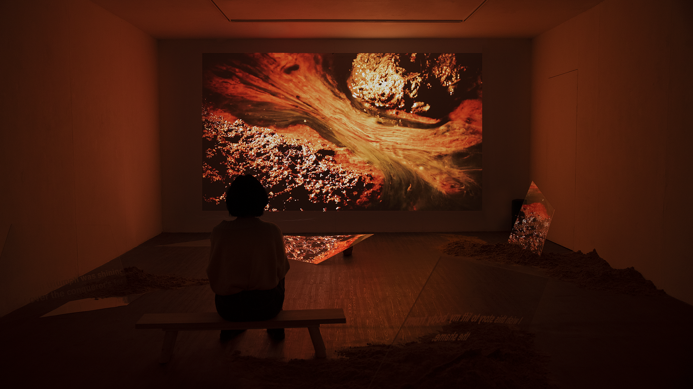

“D: D-D-D” is an artistic activism project that delves into the sensing of fine dust...
Copper, the first matter explored within The Matter Trilogy...

RUSTY ODYSSEY
Rusty Odyssey depicts the colonial faces of three copper coins (VOC Duit, Japanese Sen, and Euro coin) tracing their guilty chronicle from the 18th century till the present day in the Netherlands, Japan, and Korea. Transcending time and territories, the film cuts the temporal dimension of the geographies where the coins were born and follows the transformation of the monetary material as vitalized by capital. Rusty Odyssey reveals the colonial phantom behind the faces of the coins through the sites in which history is staged. The fluctuating heartbeat of copper—an inheritor of colonial-capitalism—still lives on.
↳ Trailer Link
↳ Screening Link
↳ Directed, Produced, Researched, Written, Edited, and Visual Design by: Yeon Sung
Camera: Yeon Yoon, Yeon Sung
3D Modeling Advisor: Jeongsik Kim
Sound Design: Jack Bardwell
Exhibition Production Design: Heejung Kim